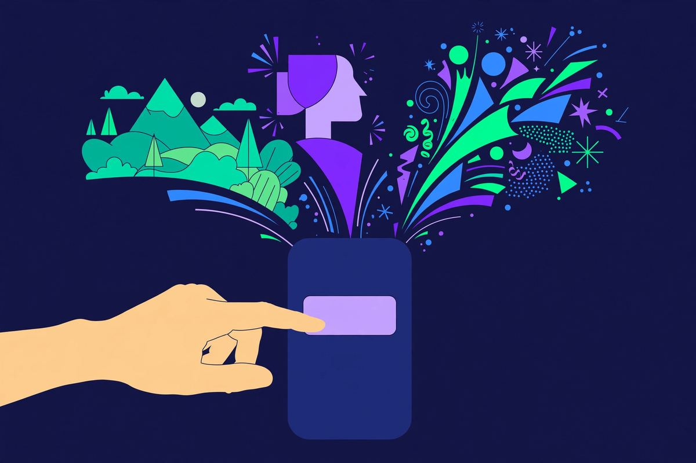
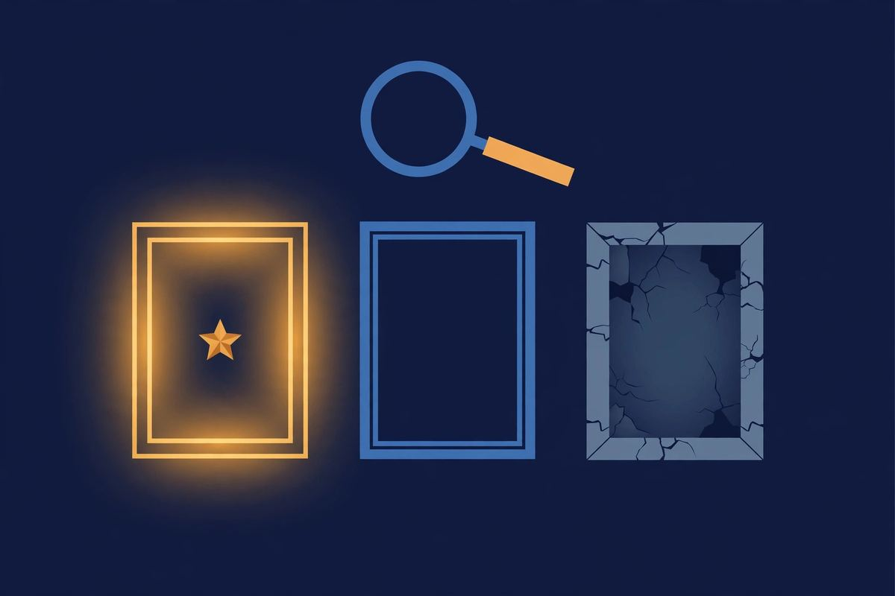

Free AI Image Generator No Sign Up: I Tested 5, 3 Are Actually Good
Every "free AI image generator" promises no sign up. Most of them lie — or technically tell the truth while giving you three watermarked thumbnails and a "create account for HD" button. I took 5 generators that claim account-free access, ran the exact same 3 prompts through each one, and compared what came out. No account, no email, no credit card anywhere in the process.

Here's the thing about testing image generators versus chatbots: with a chatbot, you know in 30 seconds if it's broken. With image generation, the failure modes are sneakier. The site works, the image appears — but it's 512px, or there's a watermark the size of a license plate, or the "free" tier is 5 images per day and you burned them on typos. So this test scored on four things, not just "did it load."
How I tested
Same 3 prompts on every generator, picked to stress different weaknesses:
- "A red panda drinking coffee in a rainy Tokyo alley, cinematic lighting" — detail + atmosphere + a specific animal (bad models turn it into a raccoon).
- "Minimalist logo of a mountain inside a circle, flat vector style" — tests whether it can do clean graphic work or only mushy photorealism.
- "An astronaut riding a horse on Mars, 1970s sci-fi poster" — composition + style adherence. The classic stress test.
Scored on: no account wall (pass/fail), image quality, speed, resolution/watermark honesty, and whether the free tier survives more than a casual session. Fresh browser, no logins anywhere.
The 3 that are actually good
1. Pollinations.ai — the one I'd actually use
Pollinations doesn't feel like a "free alternative." It feels like infrastructure that happens to be free. Same 3 prompts, no account, no key, and the red panda actually looked like a red panda — rainy alley, cinematic lighting, all there. Generation took under 10 seconds per image.
What surprised me: there's no visible paywall psychology at all. No "3/5 free images used" counter, no HD upsell nagging. The catch, such as it is: the web UI is minimal to the point of plainness, and you're sharing public rate limits with everyone. For developers the API is the real story (see our free APIs page). For everyone else: bookmark it, it just works.
2. Raphael AI — the cleanest interface
Raphael is what happens when someone builds a no-signup generator and actually cares about design. The 1970s sci-fi poster prompt came out genuinely good — composition held, style was right, no mangled text in the "poster" (the usual failure). No account wall at any point in my session.
It's less known than the big names, which cuts both ways: fewer users hammering the servers, but also less certainty it'll exist in a year. Right now, though, it's the most pleasant account-free generating experience I tested. If you want one tab open for "make me a quick image," this is a strong candidate.
3. Craiyon — ugly, unlimited, lovable
Let's be honest: Craiyon's output quality is the worst of the three winners. The mountain logo looked like it was drawn by a talented toddler. But Craiyon gives you nine images per prompt, no account, no apparent limits, and it does it fast. For memes, thumbnails, brainstorming, "what would this look like" — volume beats quality.
I keep Craiyon in the winners list because it never pretends to be something it's not. No HD upsell dark patterns, no credit system, no "sign up for better models" guilt trip. It knows it's the fun cheap one, and it owns it.
Quick comparison
| Generator | Best for | Speed | Limits hit? | Watermark? |
|---|---|---|---|---|
| Pollinations.ai | Best overall quality | <10s | No | No |
| Raphael AI | Cleanest experience | ~15s | No | No |
| Craiyon | Volume, memes, fun | ~20s | No | No |
| DeepAI | — | Fast | Yes — paywalled styles | On free tier |
| Mage.space | — | Slow | Yes — queue wall | No |

The 2 that didn't make it
DeepAI — death by paywall
DeepAI loads fast and the interface is fine. The problem: the styles worth using are behind the paywall, and the free tier watermarks outputs. Technically you can generate images without an account. Practically, every result comes with a "remove watermark / unlock HD" upsell attached. That's not a free image generator with no sign up — that's a storefront with a free sample.
Mage.space — the queue ate my afternoon
Mage.space has real model selection and no account requirement, which is why it was on the test list. But the free queue during my test was brutal — one prompt sat for several minutes while the page suggested (surprise) that priority access comes with registration. A tool you can't actually use when you want to use it fails the only test that matters.
The pattern, same as with chatbots: the failure is never "it doesn't work." It's always the slow squeeze — watermarks, queues, locked styles — designed to convert you into a registered user. The three winners are the ones that don't play that game.
What "no sign up" should actually mean
Here's my working definition, applied ruthlessly in this test: if I can't go from landing page to finished image without typing an email address, creating a password, or connecting a Google account, it's not a no-signup tool. Full stop.
This sounds obvious, but the industry has spent years blurring it. "Free" now means "free after registration." "No credit card required" means "but we still want your email." "Try it now" means "try our onboarding flow now." Every qualifier is doing heavy lifting to hide the same thing: they want you in a database.
The three winners above pass the strict definition. You open the page, you get images, nobody knows who you are. That used to be normal on the internet. Now it's a feature worth writing about — which tells you everything about where things went.
FAQ
Is there a truly unlimited free AI image generator with no sign up?
Craiyon is the closest — no account, no visible limits in my testing. Pollinations is effectively unlimited for casual use but shares public rate limits. "Unlimited" always has an asterisk; the honest question is whether you hit it in normal use. With these two, I didn't.
Do any no-signup generators do realistic photos?
Photorealism is the weak spot of the free tier everywhere. Pollinations gave the most convincing results of the five; Craiyon the least (charmingly so). If you need true photorealism without an account, temper expectations — or try the prompt twice; variance is high.
Are there really no credits or tokens involved?
On the three winners: correct, no credit system I could find. No "100 free credits," no daily allowance counter. That's increasingly rare and exactly why they're on this list. DeepAI, by contrast, runs on the classic credit-upsell model.
Can I use these images commercially?
Check each site's terms — they differ, and they change. As a rule of thumb: AI-generated images from free tiers usually allow personal use freely; commercial use depends on the provider's license. When in doubt, read the terms page, not a blog (including this one).
Why not just use the big-name generators?
Because the big names all want your email, and most want your credit card "for verification." Nothing wrong with that if you're a heavy user. But for "I need one image in the next 60 seconds," the account-free tools win on pure speed-to-result.
Is there a free AI image generator with no restrictions at all?
No — and anyone claiming "zero restrictions" is selling something. Every free service has some limit: rate limits, queue priority, model selection. The honest ones (Pollinations, Craiyon) keep the limits invisible during normal use. The dishonest ones advertise "no restrictions" and then show you the paywall after 5 images. Judge by behavior, not headlines.
The takeaway
Three generators survived the same 3 prompts with no account, no watermark games, and no queue hostage-taking: Pollinations.ai for quality, Raphael AI for experience, Craiyon for volume. The other two work — they just don't respect your time unless you pay or register, which defeats the purpose. (We found the same three failure patterns when we tested 12 no-signup AI chatbots.)
Same deal as always: providers change policies, so we re-verify. The maintained list lives in our image generation directory — and if a listed tool adds a signup wall, tell us.
And if you came here from searching "free ai image generator no sign up" — you now know more than the landing pages want you to. The good ones don't need your email. Remember that next time a "free" tool asks for it.
Tested 2026-10-11 · Providers change their signup policies — we re-verify regularly.